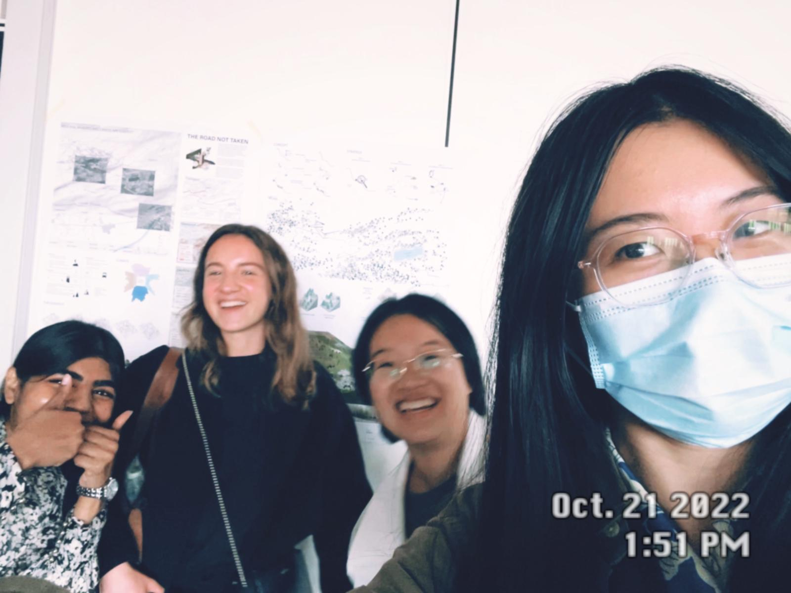

Landscape and Infrastructure Design Studio 2022-2023
Landscape and Infrastructure Design Studio 2022-2023
Our first impressions of Teglio.
We once envisaged a quick grape picking while sliding down, which was later forgotten by us. (what a pity!)
The design of different slopes.

We were trying to touch the cat.

Look at the heart-breaking words on the chair in Monumento degli Alpini in Teglio.

Cows never occur in our design but Chen Qian loves them so much.

This dog was very eager to play with us but sadly he could not leap over the fence.
Our first lunch together. These are the local food pizzoccheri.


Happy children in the playground.

Selfie at Palazzo Besta.

We picked up a bunch of grapes and didn't eat them unfortunately.

We did not take the bus but walked down the mountain for about 3 hours. Obviously we were going to die!

The first delivery
The second delivery
Every week Nadia and Ting Jiang play five piece chess.